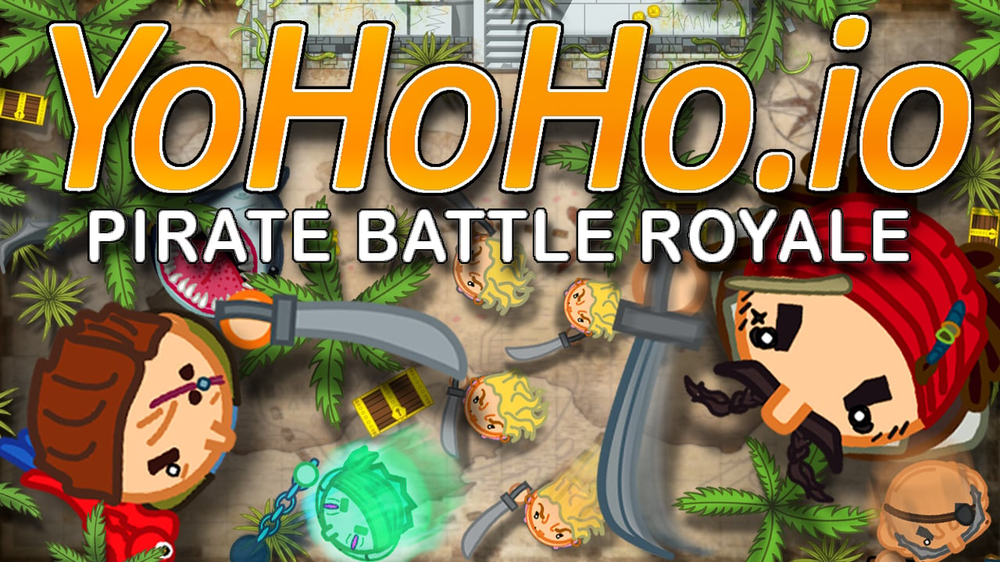
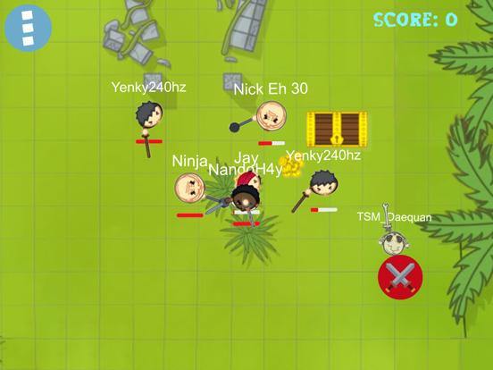
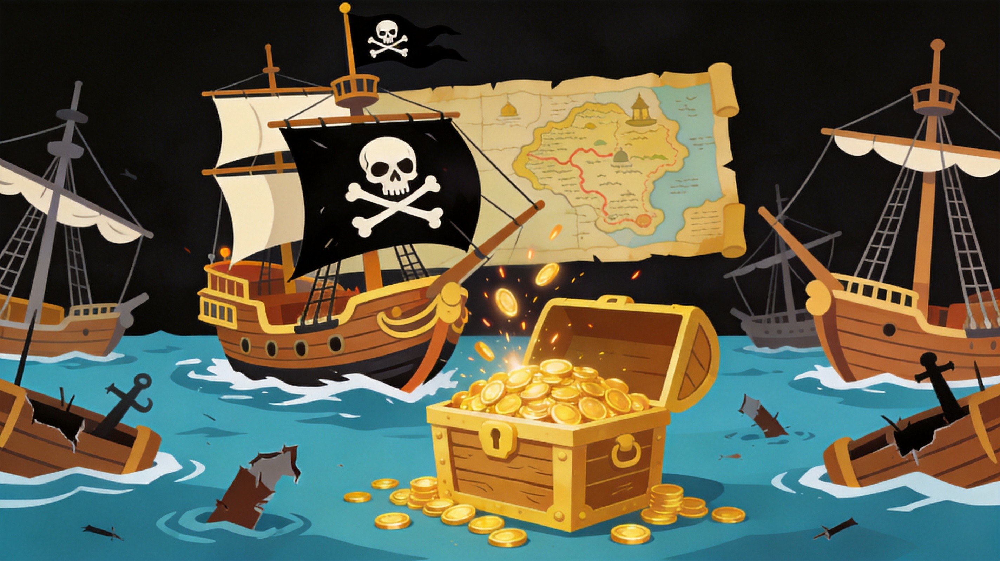

Yohoho.io is a pirate-themed battle royale game where you collect coins, upgrade your pirate, and fight other players to become the ultimate pirate champion. The game features character progression, diverse abilities, and fast-paced combat. This guide covers everything from basic movement to advanced combat strategies.
🎯 Game Basics

Objective
Yohoho.io is a battle royale with RPG elements. Collect coins scattered across the island, upgrade your character, and be the last pirate standing. The map shrinks over time, forcing confrontations.
Controls
- WASD - Move your character
- Left Click - Attack
- Space - Dodge/Special ability
- Right Click - Block (if available)
The Shrinking Island
The playable area shrinks over time. Stay inside the safe zone or take damage. Plan your movements to always be within the safe area.
🏴☠️ Characters & Upgrades
Character Types
- Warrior - Balanced stats, good melee damage
- Archer - Ranged attacks, lower health
- Mage - Special abilities, area damage
- Rogue - Fast movement, critical hits
Upgrade Categories
- Health - Increases maximum HP
- Damage - Boosts attack power
- Speed - Faster movement
- Defense - Reduced damage taken
Best Upgrade Priority
For beginners: Health first, then Damage, then Speed. Survival is more important than damage in early game.
Don't spend coins immediately. Save up for significant upgrades rather than buying many small ones. Major upgrades provide better value.
⚔️ Combat System
Attack Types
- Light Attack - Fast, lower damage
- Heavy Attack - Slow, higher damage
- Special Ability - to each character
Combat Mechanics
Dodging is crucial in Yohoho.io. Use dodge frames to avoid attacks. Spacing matters—know your attack range and stay just outside enemy range.
Combo System
Chain attacks together for combos: Light → Light → Heavy is a basic combo. Practice combos to maximize damage output.
🗺️ Battle Strategies
Early Game
Focus on collecting coins and making safe upgrades. Avoid fights unless you have a clear advantage. Let other players fight while you farm.
Mid Game
Start engaging in fights when you have decent upgrades. Look for players who are low health or distracted. Take calculated risks.
Late Game
Positioning is everything. Stay near the center of the safe zone. Engage only when confident. Final circles are about survival, not just damage.
1v1 Tips
In duels: read your opponent, don't spam attacks, dodge strategically, and punish mistakes. Patience wins fights.

💎 Pro Tips
Master one character first. Learn the ins and outs of a single character before trying others. Each has mechanics.
Watch your stamina. Dodging and blocking use stamina. Run out of stamina and you're vulnerable.
Don't chase kills. Sometimes it's better to let a wounded enemy go than to chase them into a trap.
Learn the map. Knowing coin spawn locations and safe routes gives you an advantage over players who don't.

❓ Frequently Asked Questions
What is the best character in Yohoho.io?
There's no single best character. Warrior is best for beginners (balanced). Archer excels at range. Mage has best abilities. Choose based on your playstyle.
How do I get more coins?
Coins spawn throughout the map. Kill players to steal their coins. Focus on high-traffic areas but be careful of ambushes.
Is dodging important?
Yes! Dodging is crucial for survival. It gives you invincibility frames that let you avoid damage. Master dodging to improve significantly.
What should I upgrade first?
Health is usually the best first upgrade. More HP means you can survive longer and make more mistakes.
Can I play with friends?
Yes, Yohoho.io supports multiplayer. Create a party and battle together against other teams.
📝 Conclusion
Yohoho.io combines battle royale tension with RPG progression. Collect coins, upgrade your pirate, and master combat to become the last pirate standing. Remember: not every fight needs to be taken, and smart play beats reckless aggression.
Ready to set sail? Jump into Yohoho.io and start your journey to become the ultimate pirate!
Last updated: January 20, 2024
Written by the iogameguide.com team